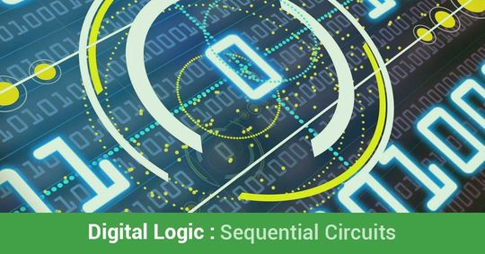
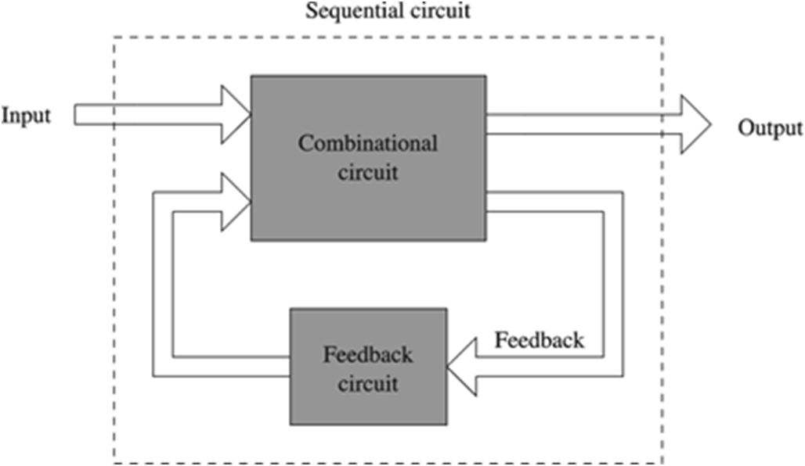

Sequential Circuits

In sequential logic circuit, the output is dependent upon the present inputs as well as the past inputs and outputs.

Sequential circuit is of two types.
- Synchronous Sequential Circuit: Change in input signals can affect memory elements only upon activation of clock signals.
- Asynchronous Sequential Circuit: Change in input signals can affect memory elements at any instant of time. These are faster than synchronous circuit.
Flip Flops:
- It is a one-bit memory cell which stores the 1-bit logical data (logic 0 or logic 1).
- It is a basic memory element.
- The most commonly used application of flip flops is in the implementation of a feedback circuit.
- As a memory relies on the feedback concept, flip flops can be used to design it.
- In synchronous sequential circuit, Memory elements are clocked flip flops and generally edge triggered.
- In asynchronous sequential circuit, Memory elements are unclocked flip flops / time delay elements which are generally level triggered.
- Flip flop circuit is also known as bistable multivibrator or latch because it has two stable states (1 state, 0 state).
There are mainly four types of flip flops that are used in electronic circuits.
- S-R Flip Flop (Basic Flip Flop)
- Delay Flip Flop (D Flip Flop)
- J-K Flip Flop
- T Flip Flop